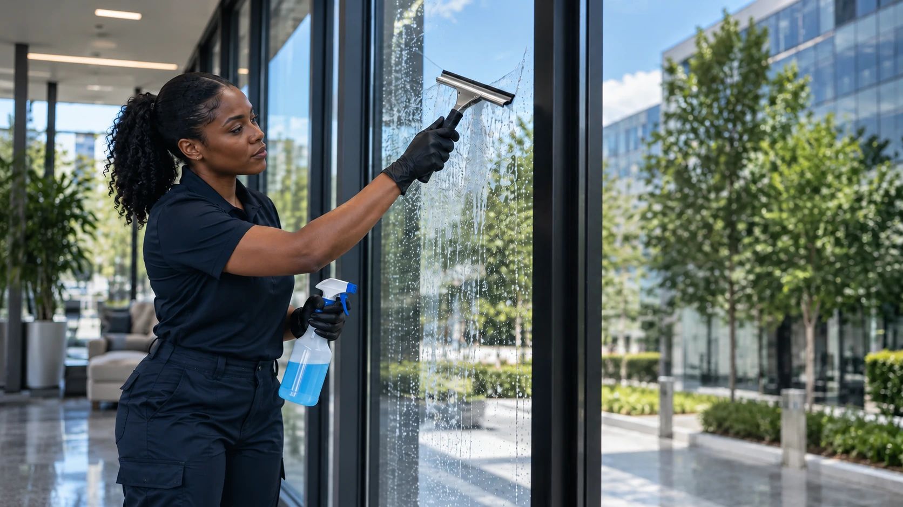
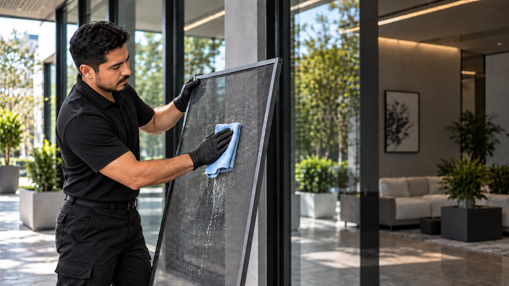
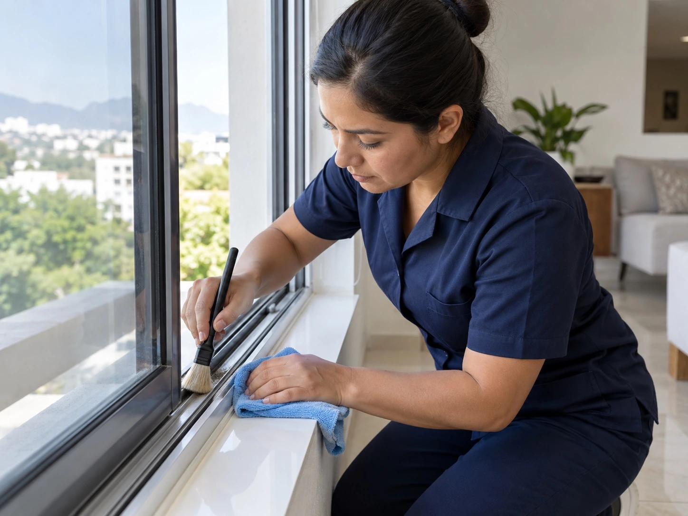
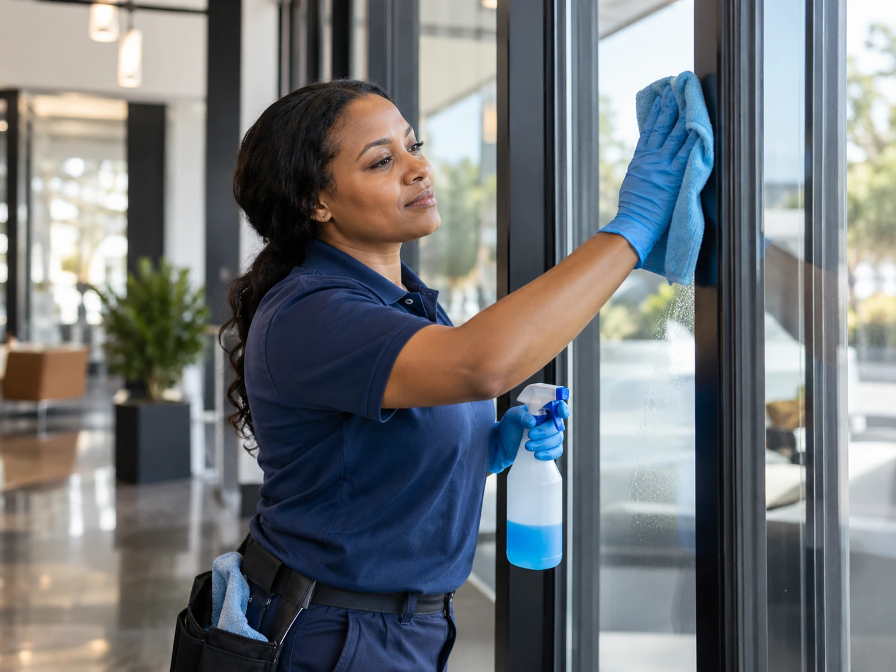
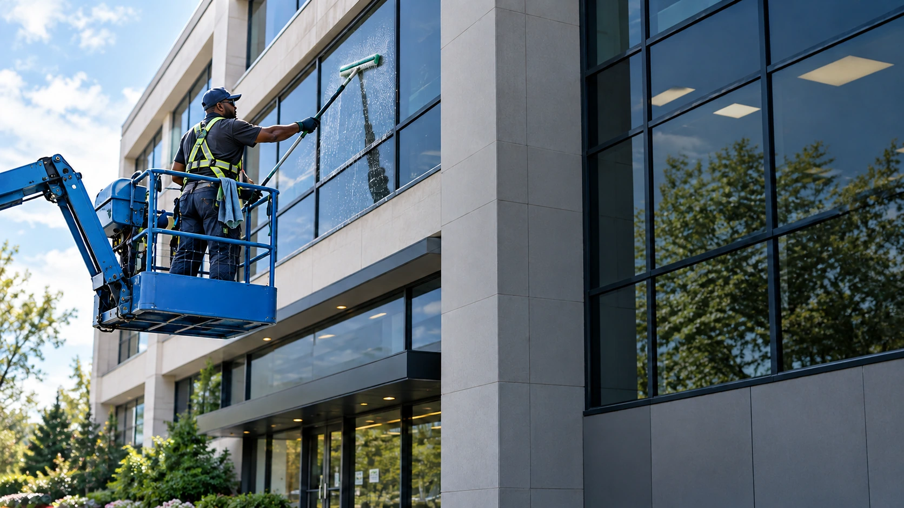

Window Cleaning Services
Window cleaning can include interior and exterior glass, screens, tracks, frames, storefronts, and accessible multi story windows. Paradigm Janitorial Services plans the scope around glass condition and access in Los Angeles County and San Bernardino County.

Interior and Exterior Window Cleaning
Clean interior and exterior glass

Screen Cleaning
Fresh screens with dust and buildup removed

Track and Frame Cleaning
Detailed care around window edges

Storefront and Display Windows
Clean glass for customer facing spaces

Multi Story Windows
Accessible buildings up to four stories
What Window Cleaning Can Include
The scope can be built around the glass, the frames, access, height, and the condition of the windows.
Pane Interiors and Exteriors
We clean both sides of accessible glass for a clear finish.
Frame and Screen Washing
Window frames, screens, and surrounding buildup can be included for a more complete result.
Hard to Reach Areas
Specialized tools can support accessible higher windows and multi story buildings up to four stories.
Residue and Stain Removal
Professional techniques can address hard water residue, fingerprints, dust, and smudges.